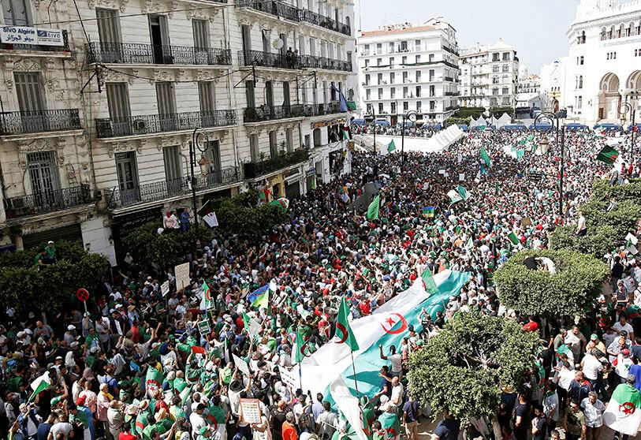

Ce lundi 22 février 2019, le Hirak célébrait ses deux ans. Contraint au sommeil par le Covid-19, le mouvement de contestation a repris pour l’occasion. Des milliers d’Algériens se sont donné rendez-vous dans les rues d’Alger.
Une démonstration de force pour prouver que le Hirak n’est pas mort, écrit Tout sur l’Algérie.

une grandiose mobilisation populeire dans plusieurs wileyas de pays, le 26 février, les milliers de manifestants dans les rues
de pays pour relencer le hirak, et réclemer un changement en algérie.